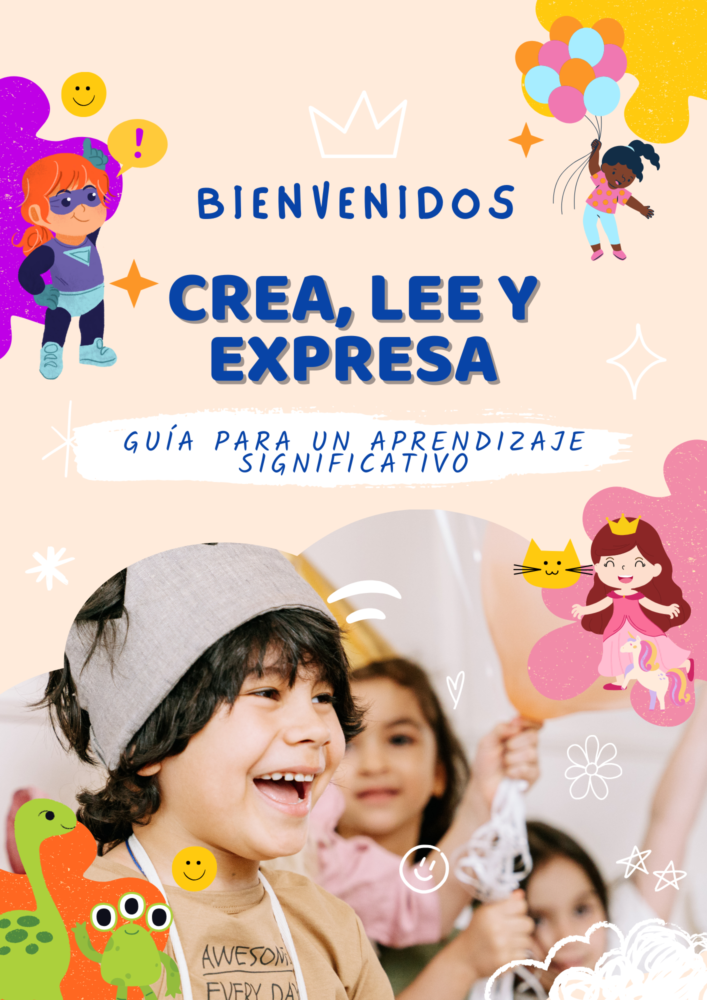
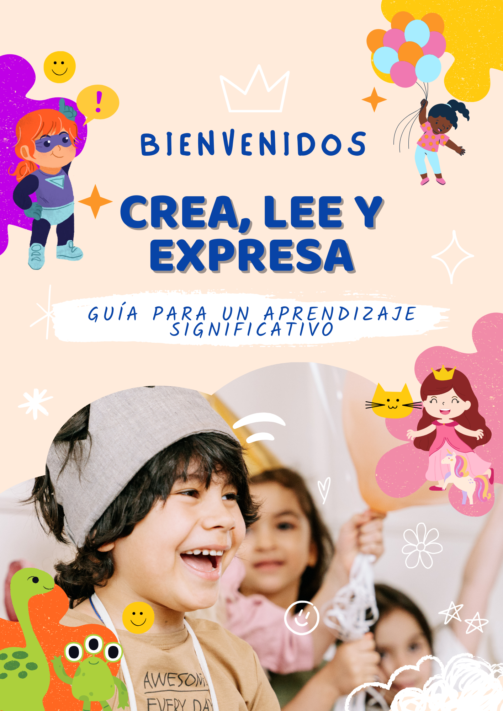
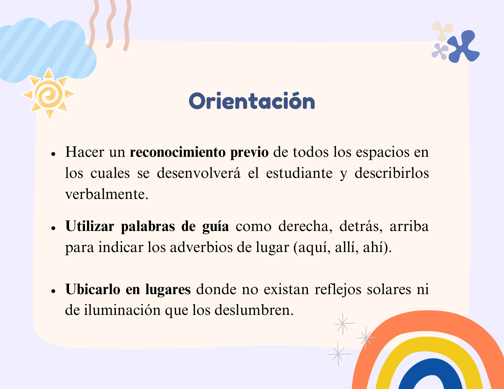
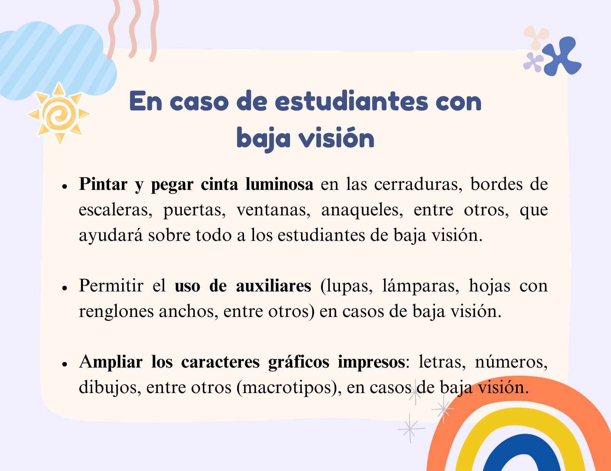
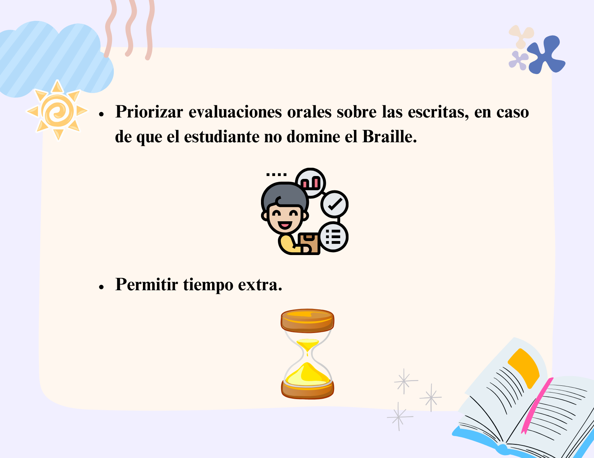
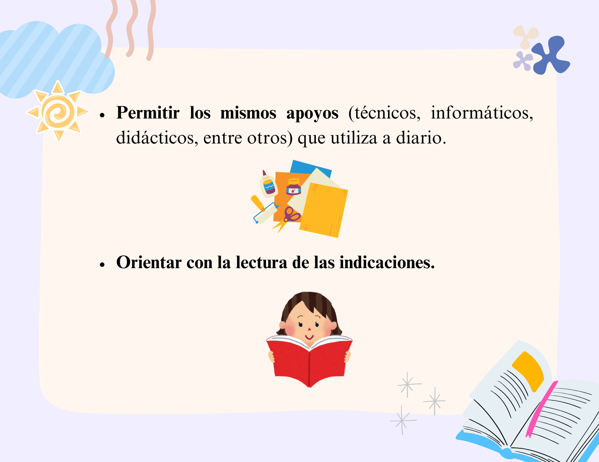
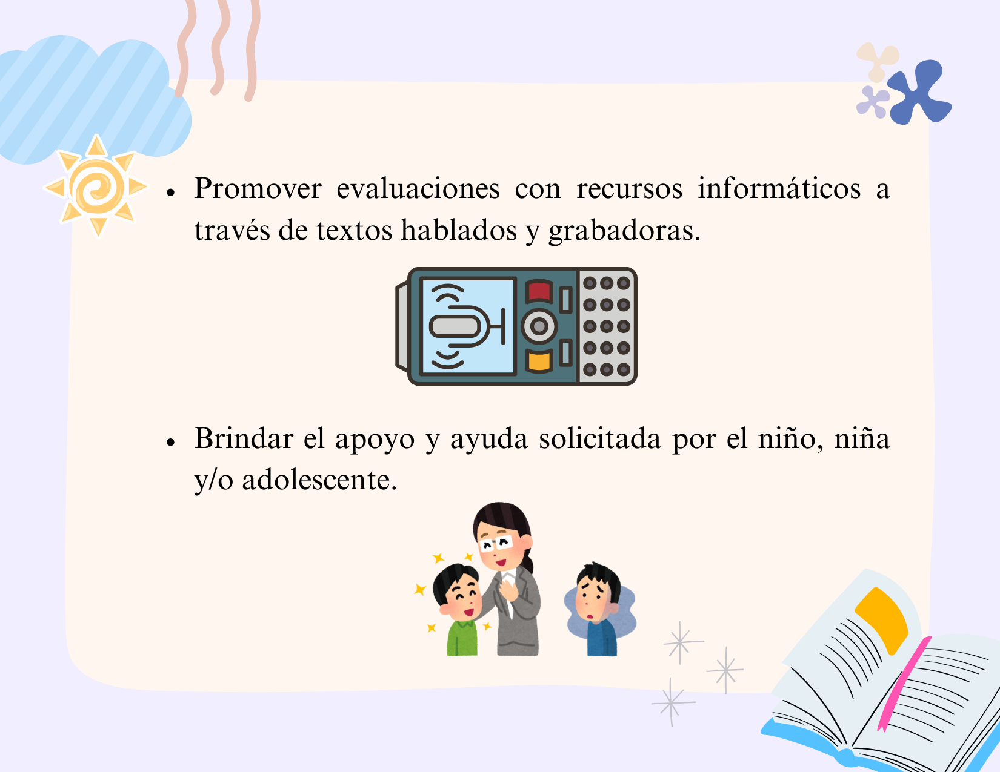
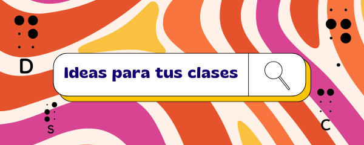
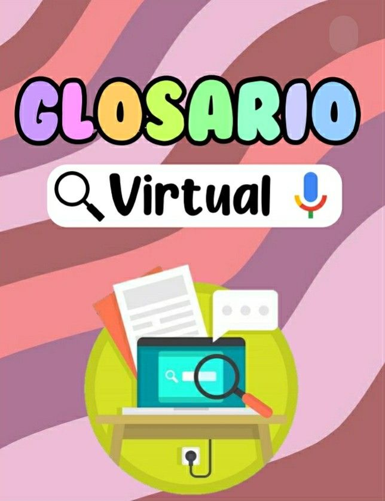

🏠 Inicio
Presentación
📖

🖇️



El recurso educativo va dirigido a los estudiantes 8vo EGB con la necesidad educativa especial (NEE) visual, con la asignatura de Lengua y Literatura, y tiene como finalidad promover un aprendizaje significativo mediante el uso de material didáctico interactivo, que motive a los estudiantes a adquirir conocimiento, de una manera divertida.

Promover un aprendizaje significativo en Lengua y Literatura para los estudiantes de 3ro de Educación General Básica (EGB) en la Unidad Educativa “Luis Braille” a través de actividades y estrategias prácticas que fortalezcan su capacidad para leer, escribir y expresarse con confianza, haciendo del aula un espacio dinámico y enriquecedor donde el amor por las palabras y la creatividad sean protagonistas.
Dar a conocer actividades dinámicas y creativas que fortalezcan las habilidades de lectura comprensiva, escritura y expresión oral de los estudiantes, promoviendo su interés y participación activa en el aprendizaje.
Fomentar la creatividad y la confianza de los estudiantes mediante estrategias prácticas que les permitan expresar sus ideas y emociones tanto de forma escrita como oral, en un ambiente seguro y motivador.
Ofrecer recursos didácticos alineados con los objetivos curriculares para facilitar la planificación docente y promover un aprendizaje colaborativo y significativo en Lengua y Literatura.





Las tic en la alfabetización braille
Las herramientas
En las investigaciones desarrolladas se han probado distintas herramientas que se pueden utilizar para iniciar al niño sin visión en el manejo de la tecnología. Todas estas herramientas permiten organizar actividades atractivas para trabajar desde los requisitos previos al braille a la eficacia lectoescritora. Las herramientas tic que se han mostrado más útiles para la alfabetización braille son la tableta digitalizadora y la línea braille, así como el lápiz lector leo, como complemento y herramienta de motivación.
Oberva el siguiente video
Revisa siguiente PDF, para aprender sobre material didáctico para las personas con discapacidad visual.
A continación, descarga el siguiente PDF sobre la guía braile para tus clases (Alfabeto, numeros, escritura) ⬇️

Observa el siguiente video sobre una idea para recrear un cuento recreativo con materiales dinámicos
¿CÓMO ADAPTAR UN CUENTO?
Para adaptar un cuento prepare cada hoja de tal forma que represente las escenas más importantes y en la parte inferior coloque el texto en tinta y braille. Para la representación de personas, utilice telas como “dulce abrigo” o “paño lency” para la cara y las manos, otras telas para la ropa y cuero para los zapatos. En la cara coloque los ojos, utilice los que venden en las tiendas de adornos y materiales para confección; realce la nariz, la boca y las orejas con pedacitos del mismo “paño lency”. Para
el cabello puede utilizar cabello real o sintético, o si lo prefiere artiseda o lana. Si se trata de animales, en lo posible use pedacitos de piel o peluches. Para casitas, árboles, en fin, los “escenarios” del cuento, puede hacerlo con paño decorativo “pisitex”.
Reproduce el siguiente video audio en un volumen adecuado para tus estudiantes y permite que aprendan el abecedario de forma más interesante.
Reproduce el siguiente video audio en un volumen adecuado para tus estudiantes y permite que aprendan los números de forma más interesante.

1. Necesidades Educativas Especiales (NEE): Se refiere a las necesidades de apoyo educativo que tienen algunos estudiantes debido a discapacidades o dificultades de aprendizaje.
2. Organización Mundial de la Salud (OMS): Es una agencia de la ONU que coordina esfuerzos internacionales para mejorar la salud y el bienestar de las personas en todo el mundo.
3. Estrategias Pedagógicas: Son métodos y técnicas utilizadas por los educadores para facilitar el aprendizaje y adaptarse a las diversas necesidades de los estudiantes.
4. Desarrollo Integral: Proceso que busca el crecimiento y bienestar completo de una persona en aspectos físicos, emocionales, sociales y cognitivos.
5. Auxiliares: En el contexto educativo, son personas que apoyan a los docentes en la atención y cuidado de estudiantes, especialmente aquellos con NEE.
6. Sistema Braille: Es un método de lectura y escritura táctil utilizado por personas ciegas o con discapacidad visual, basado en combinaciones de puntos en relieve.

World Health Organization (WHO). (2024). Who.int. https://www.who.int/
De Trabajo, G. (n.d.). NECESIDADES EDUCATIVAS ESPECIALES.
https://educacion.gob.ec/wp-content/uploads/downloads/2019/05/Guia-de-estrategiaspedagogicas-para-atender-necesidades-educativas-especiales-en-el-aula.pdf
Edeca Formación. (2022, October 27). Intervención Educativa: Que es, tipos y cómo
aplicarla en el aula. Edeca Formación. https://edecaformacion.com/intervencioneducativa-que-es-tipos-y-como-aplicarla-en-el-aula
Vive UNIR. (2023, April 10). Niños con discapacidad visual: cómo atender sus necesidades
educativas en aula. UNIR México; UNIR.
https://mexico.unir.net/noticias/educacion/discapacidad-visual/
Discapacidad visual. (2021). Discapnet. https://www.discapnet.es/discapacidad/tipos-dediscapacidad/discapacidad-sensorial/discapacidad-visual
https://www.inesem.es/revistadigital/educacion-sociedad/discapacidad-visual-alumno/
| Título | 🌞CREA, LEE Y EXPRESA: Guía para un Aprendizaje Significativo |
|---|---|
| Descripción | Recurso educativo dirigido a estudiantes |
| Autoría | Lady Ramírez, Daniel León, Cristian Romero, Danny Sarango |
| Licencia | Creative Commons BY-SA 4.0 |
Este contenido fue creado con eXeLearning, el editor libre y de fuente abierta diseñado para crear recursos educativos.
Obra publicada con Licencia Creative Commons Reconocimiento Compartir igual 4.0
{kind=link}
{kind=link}
{kind=link}
{kind=link}